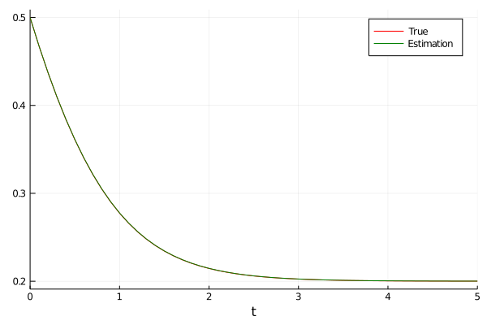

Implicit Sparse Identification of Nonlinear Dynamics
While SInDy works well for ODEs, some systems take the form of rational functions dx = f(x) / g(x). These can be inferred via ISInDy, which extends SInDy for Implicit problems. In particular, it solves
where $\Xi$ lies in the nullspace of $\Theta$.
Example
Let's try to infer the Michaelis-Menten Kinetics, like in the corresponding paper. We start by generating the corresponding data.
using DataDrivenDiffEq
using ModelingToolkit
using OrdinaryDiffEq
using LinearAlgebra
using Plots
gr()
function michaelis_menten(u, p, t)
[0.6 - 1.5u[1]/(0.3+u[1])]
end
u0 = [0.5]
tspan = (0.0, 5.0)
problem = ODEProblem(michaelis_menten, u0, tspan)
solution = solve(problem, Tsit5(), saveat = 0.1, atol = 1e-7, rtol = 1e-7)
savefig("isindy_example.png")
X = solution[:,:]
DX = similar(X)
for (i, xi) in enumerate(eachcol(X))
DX[:, i] = michaelis_menten(xi, [], 0.0)
end
@variables u
basis= Basis([u^i for i in 0:4], [u])5 dimensional basis in ["u"]The signature of ISInDy is equal to SInDy, but requires an AbstractSubspaceOptimser. Currently, DataDrivenDiffEq just implements ADM() based on alternating directions. rtol gets passed into the derivation of the nullspace via LinearAlgebra.
opt = ADM(1e-1)ADM{Float64,ProximalOperators.NormL1{Float64}}(0.1, description : weighted L1 norm
domain : AbstractArray{Real}, AbstractArray{Complex}
expression : x ↦ λ||x||_1
parameters : λ = 0.1)Since ADM() returns sparsified columns of the nullspace we need to find a pareto optimal solution. To achieve this, we provide a sufficient cost function g to ISInDy. This allows us to evaluate each individual column of the sparse matrix on its 0-norm (sparsity) and the 2-norm of the matrix vector product of $\Theta^T \xi$ (nullspace). This is a default setting which can be changed by providing a function f which maps the coefficients and the library onto a feature space. Here, we want to set the focus on the the magnitude of the deviation from the nullspace.
Ψ = ISInDy(X, DX, basis, g = x->sum(1e-3*x[1]+x[2]), opt = opt, maxiter = 1000)┌ Warning: `solve(ex)` is deprecated in JuliaVariables 0.2.x. Please use `solve!(ex)` instead. `solve(ex)`, which currently mutates `ex` in-place, will be re-introduced in 0.3 as a non-mutating variant.
│ caller = mk_function(::Module, ::Expr) at GeneralizedGenerated.jl:22
└ @ GeneralizedGenerated ~/.julia/packages/GeneralizedGenerated/IobaZ/src/GeneralizedGenerated.jl:22The function call returns a SparseIdentificationResult. As in Sparse Identification of Nonlinear Dynamics, we can transform the SparseIdentificationResult into an ODESystem.
# Transform into ODE System
sys = ODESystem(Ψ)
dudt = ODEFunction(sys)
ps = parameters(Ψ)
estimator = ODEProblem(dudt, u0, tspan, ps)
estimation = solve(estimator, Tsit5(), saveat = 0.1)
The model recovered by ISInDy is correct
print_equations(Ψ)1 dimensional basis in ["u"]
du = -1 * inv(u ^ 3 * p₁ + u ^ 4 * p₂) ^ 1 * (u ^ 3 * p₃ + u ^ 4 * p₄)The parameters are off a little, but, as before, we can use DiffEqFlux to tune them.
Functions
DataDrivenDiffEq.ISInDy — FunctionISInDy(X, Y, Ψ; f, g, maxiter, rtol, p, t, opt)Performs an implicit sparse identification of nonlinear dynamics given the data matrices X and Y via the AbstractBasis basis. Keyworded arguments include the parameter (values) of the basis p and the timepoints t, which are passed in optionally. opt is an AbstractSubspaceOptimizer useable for sparse regression within the nullspace, maxiter the maximum iterations to perform, and convergence_error the bound which causes the optimizer to stop.
The best vectors of the sparse nullspace are selected via multi-objective optimization. The best candidate is determined via the mapping onto a feature space f and an (scalar, positive definite) evaluation g. The signature of should be f(xi, theta) where xi are the coefficients of the sparse optimization and theta is the evaluated candidate library. rtol gets directly passed into the computation of the nullspace.
Returns a SInDyResult.
DataDrivenDiffEq.Optimize.ADM — TypeADM(λ = 0.1)Optimizer for finding a sparse basis vector in a subspace based on this paper. λ is the weight for the soft-thresholding operation.